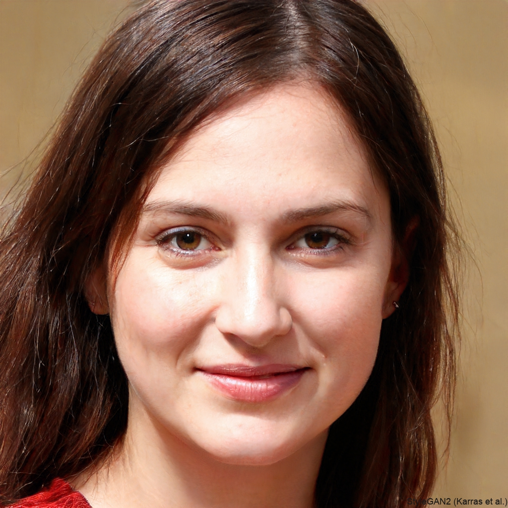

Jane Doe

Summary
I am a Web Designer & Web Developer. I create beautiful websites and bring them to life with HTML, CSS and Java.
Education
- 🎓 Bachelor’s Degree in Computer Science -
University of Technology, 2018 – 2022
- 🎓 Diploma in Web Development -
Online Coding Bootcamp, 2021
- St.Cathrines School: 2006-2018
Work Experience
Freelance Web Designer & Developer
2022 – Present
- Designed and developed responsive websites for small businesses and startups.
- Created custom web designs using HTML, CSS, and JavaScript.
- Optimized websites for performance, accessibility, and SEO.
- Worked closely with clients to understand their brand and deliver engaging user experiences.
Junior Front-End Developer – Tech Solutions Ltd.
2021 – 2022
- Assisted in designing and coding website layouts and UI components.
- Developed interactive features using JavaScript and jQuery.
- Collaborated with designers and back-end developers to improve UX/UI.
- Maintained and updated company websites for better performance and usability.
Intern Web Developer – Creative Digital Agency
2020 – 2021
- Gained hands-on experience in front-end development.
- Assisted in debugging and testing websites before launch.
- Learned how to work with design tools and CMS platforms.
Skills
- HTML5, CSS3, JavaScript (ES6+)
- Responsive Web Design & Mobile-First Development
- UI/UX Principles & Wireframing
- CSS Frameworks (Bootstrap, Tailwind CSS)
- JavaScript Libraries (jQuery, GSAP)
- Basic SEO & Performance Optimization
- Version Control (Git & GitHub)
- Cross-Browser Compatibility & Testing
Awards & Certifications
- Best Web Design Portfolio – Web Dev Awards, 2023
- Certified JavaScript Developer – Online Tech Institute, 2022
- Top Freelancer of the Month – CodeWorks, 2023
Interests
- UI/UX Design Trends
- Front-End Development & Animation
- Mobile-First Web Design
- Photography & Graphic Design
- Gaming & Game UI Development
- Travel & Cultural Experiences